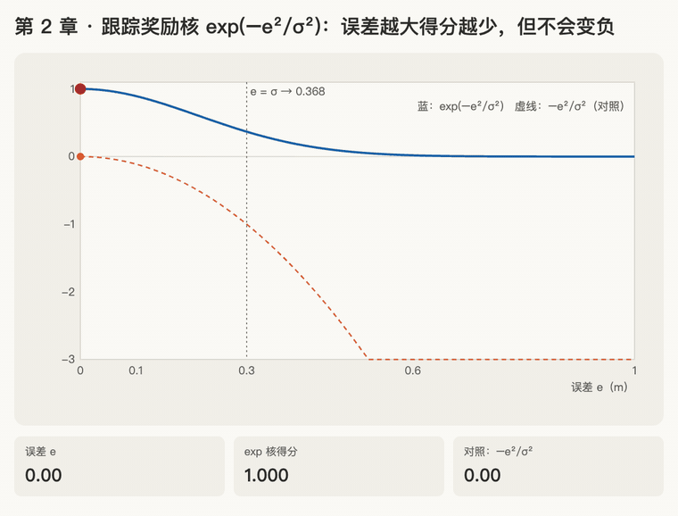

第 2 章 · 把动作跟踪写成 MDP：看什么、做什么、怎么打分、什么时候算摔
本章回答：要让人形机器人模仿一段人类动作，强化学习需要的「状态、动作、奖励、终止」分别是什么？为什么奖励用 exp(−误差²/σ²) 这种形状？
讲解日期：2026-11-20 · 上一章：第 1 章 三层与 PD · 下一章：第 3 章 PPO 运控配方
对应原文：SuperMimic §3.1（papers/supermimic-2610.28480.txtL204–L230）、附录 A（L672–L715，表 A.1–A.3）；BeyondMimic 的动作跟踪设定（papers/beyondmimic-2508.08241.txt）
本章缩写：MDP = Markov Decision Process（马尔可夫 / 决策 / 过程，《从零学强化学习》第 5 章）；POMDP = Partially Observable MDP（部分 / 可观测的 MDP：只看得到一部分状态）；IMU = Inertial Measurement Unit（惯性 / 测量 / 单元：测角速度和加速度）；σ：奖励核的宽度（读 "sigma"）；dt：控制周期（这里 0.02 s）。全部缩写见 附录 · 缩写与术语表
讲解
第一步：观测：机器人能「感觉」到什么（2026-11-20）
类比：闭着眼睛跳舞。 你看不到自己，但能感觉到每个关节弯多少、转多快、身体往哪边倒、刚才手脚是怎么动的。
SuperMimic 的观测（原文 L672–L689，表 A.1）只有本体感知，全是真机上传感器拿得到的：
| 项 | 维度 | 来自 |
|---|---|---|
| 关节位置 \(q - q^0\)（相对默认姿态） | 29 | 关节编码器 |
| 关节速度 \(\dot q\) | 29 | 编码器差分 |
| 躯干角速度 | 3 | IMU |
| 重力在躯干坐标系里的方向 | 3 | IMU（算出「往哪边倒」） |
| 上一步动作 \(a_{t-1}\) | 29 | 自己记着 |
每帧 29 + 29 + 3 + 3 + 29 = 93 维，取最近 10 帧，共 930 维。G1 机器人有 29 个关节，所以动作也是 29 维（第 1 章的设定值）。
只看得到一部分状态（比如看不到地面摩擦、看不到自己的绝对位置），所以严格说是 POMDP；用 10 帧历史来补。
一句话：策略只用真机拿得到的本体感知，10 帧历史补上看不见的部分。
第二步：目标：要模仿的那段动作（2026-11-20）
类比：跟着舞蹈老师跳。 你不只看老师现在的姿势，还会瞄一眼他接下来要做什么。
目标 \(g_t\) 从参考动作（动捕数据重定向到 G1 上）里读：SuperMimic 用未来 K = 10 帧参考姿态（原文 L689；BeyondMimic 只用当前 1 帧）。策略的输入是「观测 + 目标」，输出是 29 个关节的设定值：\(a_t = \pi_\theta(o_t, g_t)\)。
一句话：输入 = 我现在怎样 + 老师接下来要怎样，输出 = 29 个关节往哪使劲。
第三步：奖励：exp(−误差²/σ²) 的「核」（2026-11-20）
类比：射箭的靶。 正中靶心 10 分，偏一点 9 分，偏很多 0 分，但不会扣成负数。
每一项跟踪误差 e 都放进同一个形状：
- e：误差（位置误差单位 m，朝向误差单位 rad）。
- σ：宽度，「多大的误差算偏得厉害」。e = σ 时得分 \(e^{-1} \approx 0.368\)。
例子（刚体位置项，σ = 0.3 m）：
| 误差 e | 0 | 0.1 | 0.3 | 0.6 |
|---|---|---|---|---|
| 得分 | 1.000 | 0.895 | 0.368 | 0.018 |
为什么不用 −e²？因为 −e² 无下界：一次大失误能扣成 −100，把整批数据的梯度都拽过去；exp 核把每项限制在 [0, 1]，误差大了只是「这项拿不到分」，各项加起来也好比较。
SuperMimic 表 A.2 的奖励（沿用 BeyondMimic，去掉了自碰撞惩罚）：
| 项 | σ | 权重 |
|---|---|---|
| 各刚体位置 | 0.3 m | 1.0 |
| 各刚体朝向 | 0.4 rad | 1.0 |
| 各刚体线速度 | 1.0 m/s | 1.0 |
| 各刚体角速度 | 3.14 rad/s | 1.0 |
| 根部（骨盆）位置 / 朝向 | 0.3 / 0.4 | 各 0.5 |
| 动作平滑 \(\|a_t - a_{t-1}\|^2\) | — | −0.1 |
| 关节超限 | — | −2 |
每一项最后都乘控制周期 dt = 0.02 s（原文表 A.6 注）。
例子（误差是编的）：位置 0.1、朝向 0.2、线速度 0.5、角速度 1.0、根部位置 0.1、根部朝向 0.2，动作变化 (0.2, −0.1)，没超限：
- 任务项 = 0.895 + 0.779 + 0.779 + 0.904 + 0.5×0.895 + 0.5×0.779 ≈ 4.193
- 正则项 = −0.1 × (0.04 + 0.01) = −0.005
- 乘 dt：r = (4.193 − 0.005) × 0.02 ≈ 0.0838
一句话：每项误差进一个 exp 核拿 0 到 1 分，加权求和、减掉正则、乘 dt。
第四步：终止：什么时候算「摔了」（2026-11-20）
类比：跳舞跳到一半摔在地上，这一曲就不算了。
SuperMimic 的终止条件（原文 L704–L708）：根部高度偏离参考超过 0.25 m，或倾斜误差超过 0.8。倾斜误差 = 参考和机器人骨盆坐标系里「重力方向 z 分量」之差的绝对值。参考直立时，机器人倾斜 θ 度，误差 = |1 − cos θ|：
| 倾斜 | 30° | 60° | 78° | 90° |
|---|---|---|---|---|
| 误差 | 0.134 | 0.5 | 0.792 | 1.0 |
所以 0.8 大约对应 78°（原文原话：0.8 at about 78°）。
终止的作用：一旦终止，后面的奖励全都拿不到。每步奖励都是正的（核 ≥ 0），所以「活得越久分越多」，策略自然学会别摔。
一句话：偏太远、倒太狠就结束，后面的正奖励全没了，这就是「别摔」的信号。
动画演示：奖励核的形状

可交互版：animations/02-reward-kernel.html（滑块：σ、误差 e）。
怎么看：
- 曲线是 \(k(e) = \exp(-e^2/\sigma^2)\)，红点是当前误差拿到的分（第三步）。
- 虚线是 −e² 的对照：误差一大就扣成很大的负数，exp 核则停在 0。
- 拖 σ：σ 越小越「严格」，同样的误差得分更低。
练习与作答记录
题 1（第一步）：如果机器人有 23 个关节，观测每帧多少维？取 5 帧历史是多少维？
作答：（待作答）
题 2（第三步）：朝向项 σ = 0.4 rad。误差 0.4 和 0.8 时各得多少分？为什么奖励核比 −e² 更不容易「一次失误毁掉整批梯度」？
作答：（待作答）
题 3（第四步）：倾斜阈值从 0.8 改成 0.5，参考直立时大约对应多少度？阈值太严会让哪类动作很难学（举一个例子）？
作答：（待作答）
口诀
闭眼跳舞靠本体：关节、速度、IMU、上一步，十帧历史补看不见；
跟着老师看十帧，输出二十九个设定值；
误差进核零到一，加权求和乘 dt；
偏高倒斜就终止，正分拿不到，自然学会别摔。
本章复习卡片
M03（奖励核 exp(−e²/σ²)，e = σ 时 0.368，为什么不用 −e²）、M04（终止条件与「正奖励 + 提前终止 = 别摔」）
附录 · 延伸阅读
留给以后深入学习用，不影响本章主线。★ 是建议先读的。
推荐阅读
| 读什么 | 读哪里 | 读它为了什么 |
|---|---|---|
| ★ SuperMimic 附录 A | papers/supermimic-2610.28480.txt L672–L715，表 A.1–A.3 |
观测、动作、奖励、终止、域随机化的完整清单 |
| ★ DeepMimic §5 | papers/deepmimic-1804.02717.txt L276 起（States and Actions）、奖励设计 |
exp 跟踪核的出处 |
| BeyondMimic | papers/beyondmimic-2508.08241.txt |
人形动作跟踪的标准奖励与终止 |
| 《从零学强化学习》第 5 章 | cs285-deep-rl/notes/lessons/05-mdp.md |
MDP 的定义 |
| 运控调研 §1 | survey-ppo-grpo-supermimic.md §1 | 同一张 MDP 表，和 LLM RL 的对比 |
数学原理
- 高斯核：\(\exp(-e^2/\sigma^2)\) 和正态分布同形，处处可导，在 e = 0 附近梯度平缓、远处趋于 0。
- 重力投影：把世界坐标系的重力方向 (0, 0, −1) 用旋转矩阵转到躯干坐标系，z 分量就是 cos(倾斜角)。
公式清单
| 公式 | 意思 |
|---|---|
| \(k(e) = \exp(-e^2/\sigma^2)\) | 跟踪奖励核 |
| \(r_t = \big(\sum_i w_i k(e_i) - 0.1\|a_t-a_{t-1}\|^2 - 2\cdot\text{超限}\big)\cdot dt\) | 每步奖励 |
| $e_{tilt} = | 1 - \cos\theta |
| \(a_t = \pi_\theta(o_t, g_t)\) | 目标条件策略 |
代码对照：把本章的数字用代码算一遍
用 Python + NumPy 把讲义里讲过的数算一遍，不算练习题。代码在仓库本地
robot-motion-rl/solutions/chapter-code/ch02_tracking_mdp.py，配套测试tests/test_ch01_06.py，notebook 在notebooks/ch02_tracking_mdp.ipynb。Mac 上直接能跑，不需要 GPU：
bash cd robot-motion-rl/solutions/chapter-code uv run python ch02_tracking_mdp.py uv run pytest tests/test_ch01_06.py
讲义 ↔ 代码（误差是编的，σ 和权重取自 SuperMimic 表 A.2）：
| 讲义 | 公式 | 写法 | 跑出来 |
|---|---|---|---|
| 第一步 观测 | 93 × 10 | obs_dim() |
930 |
| 第三步 奖励核 | \(\exp(-e^2/\sigma^2)\) | kernel(e, 0.3) |
1.000、0.895、0.368、0.018 |
| 第四步 倾斜 | $ | 1-\cos\theta | $ |
| 第三步 总奖励 | 加权 + 正则 × dt | tracking_reward(...) |
任务 4.193，正则 −0.005，r = 0.0838 |
关键几行：
def kernel(err, sigma):
return float(np.exp(-(err**2) / sigma**2)) # 误差 0 → 1，误差 = σ → 0.368
task = kernel(pos_err, 0.3) + kernel(ori_err, 0.4) + ... # 各刚体项权重 1，根部两项权重 0.5
reg = -0.1 * np.sum(np.square(da)) - 2.0 * joint_violation # 动作平滑 + 关节超限
return (task + reg) * dt # 每项都乘控制周期 0.02 s
代码里才看得到的 2 件事：
- 论文里每个刚体项是「先对所有被跟踪刚体的误差平方求平均，再进核」；代码为了好算，直接给一个平均后的误差。
- 角速度项的 σ 是 3.14（约 π rad/s），所以角速度误差 1.0 几乎不扣分（0.904），这一项其实很宽松。
自己改一改（不影响练习答案）：
- 把位置项 σ 从 0.3 改成 0.1，看同样 0.1 m 的误差得分掉到多少。
- 把 dt 去掉，看每步奖励的量级变化（为什么各项要乘 dt：让奖励和控制频率无关）。